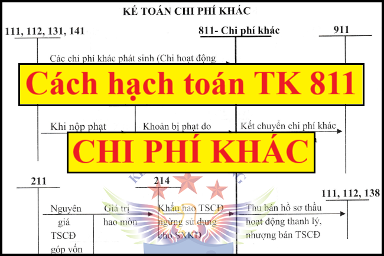

Hướng dẫn cách hạch toán các khoản chi phí khác - Tài khoản 811 áp dụng chế độ kế toán theo Thông tư 99/2025/TT-BTC mới nhất 2026, cách hạch toán nhượng bán thanh lý TSCĐ, hạch toán tiền phạt vi phạm hợp đồng kinh tế, vi phạm hành chính
1. Tài khoản 811 - Chi phí khác
Nguyên tắc kế toán
a) Tài khoản này phản ánh những khoản chi phí phát sinh do các sự kiện hay các nghiệp vụ riêng biệt với hoạt động thông thường của các doanh nghiệp. Chi phí khác của doanh nghiệp có thể gồm:
- Chi phí thanh lý, nhượng bán TSCĐ (gồm cả chi phí đấu thầu hoạt động thanh lý). Số tiền thu từ bán hồ sơ thầu hoạt động thanh lý, nhượng bán TSCĐ được ghi giảm chi phí thanh lý, nhượng bán TSCĐ;
- Chênh lệch giữa giá trị hợp lý tài sản được chia từ BCC nhỏ hơn chi phí đầu tư xây dựng tài sản đồng kiểm soát;
- Giá trị còn lại của TSCĐ bị tháo dỡ, di dời,…;
- Giá trị còn lại của TSCĐ thanh lý, nhượng bán TSCĐ (nếu có);
- Chênh lệch lỗ do đánh giá lại vật tư, hàng hóa, TSCĐ đưa đi góp vốn vào công ty con, công ty liên doanh, đầu tư vào công ty liên kết, đầu tư dài hạn khác,...;
- Tiền phạt phải trả do vi phạm hợp đồng kinh tế, phạt hành chính;
- Các khoản chi phí khác.
b) Các khoản chi phí không được coi là chi phí tính thuế TNDN theo quy định của Luật thuế nhưng có đầy đủ hóa đơn chứng từ và đã hạch toán đúng theo Chế độ kế toán thì không được ghi giảm chi phí kế toán mà chỉ điều chỉnh trong quyết toán thuế TNDN để làm tăng số thuế TNDN phải nộp.
2. Kết cấu và nội dung Tài khoản 811
|
Bên Nợ |
Bên Có |
|
Các khoản chi phí khác phát sinh |
Cuối kỳ, kết chuyển toàn bộ các khoản chi phí khác phát sinh trong kỳ vào tài khoản 911 “Xác định kết quả kinh doanh” |
| Tài khoản 811 không có số dư cuối kỳ | |
3. Cách hạch toán các khoản chi phí khác 1 số nghiệp vụ:
|
a) Hạch toán nghiệp vụ nhượng bán, thanh lý TSCĐ: - Ghi nhận thu nhập khác do nhượng bán, thanh lý TSCĐ, ghi: Nợ các TK 111, 112, 131,... Có TK 711 - Thu nhập khác Có TK 3331 - Thuế GTGT phải nộp (33311) (nếu có). - Ghi giảm TSCĐ dùng vào SXKD đã nhượng bán, thanh lý, ghi: Nợ TK 214 - Hao mòn TSCĐ (giá trị hao mòn lũy kế) Nợ TK 811 - Chi phí khác (giá trị còn lại) Có các TK 211, 213 - Ghi nhận các chi phí phát sinh cho hoạt động nhượng bán, thanh lý TSCĐ, ghi: Nợ TK 811 - Chi phí khác Nợ TK 133 - Thuế GTGT được khấu trừ (1331) (nếu có) Có các TK 111, 112, 141,... - Ghi nhận khoản thu từ bán hồ sơ thầu liên quan đến hoạt động thanh lý, nhượng bán TSCĐ, ghi: Nợ các TK 111, 112, 138... Nợ TK 214 - Hao mòn TSCĐ (giá trị hao mòn lũy kế) Nợ TK 811 - Chi phí khác (giá trị còn lại) Có các TK 211, 213
c) Kế toán chi phí khác phát sinh khi đánh giá lại vật tư, hàng hóa, TSCĐ đầu tư vào công ty con, công ty liên doanh, liên kết: Thực hiện theo hướng dẫn tại các TK 221, 222, 228. d) Hạch toán các khoản tiền bị phạt do vi phạm hợp đồng kinh tế, phạt vi phạm hành chính, ghi: Nợ TK 811 - Chi phí khác Có các TK 111, 112, 338,... Có TK 333 - Thuế và các khoản phải nộp Nhà nước (3339) (nếu có). đ) Tại thời điểm kết thúc kỳ kế toán, kết chuyển toàn bộ chi phí khác phát sinh trong kỳ để xác định kết quả kinh doanh, ghi: Nợ TK 911 - Xác định kết quả kinh doanh Có TK 811 - Chi phí khác. |
Kế toán Diệu Tâm Chúc là 1 địa chỉ học kế toán thực hành thực tế tốt nhất tại Hà Nội.
-----------------------------------------------------
